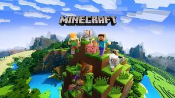

The very world is at your fingertips as you fight for survival, fortune, and glory. Delve deep into
cavernous expanses, seek out ever-greater foes to test your mettle in combat, or construct your own city -
In the World of Terraria, the choice is yours! Blending elements of classic action games with the freedom of
sandbox-style creativity, Terraria is a unique gaming experience where both the journey and the destination
are as unique as the players themselves!
This paragraph was taken from the official Terraria website at
www.Terraria.org
Terraria Review
The graphics for this game is exactly how you would expect a 2d game to look. I do have to say the
colours when entering caves under ground and the underworld are extraordinary to look at. The regular
overworld graphics are really nice, the colours and the environment are really pretty and makes it nice
to play.
I dont know much about the story but the basic knowledge is that you can use your own world however you
want. You can build, you can fight or you can just run around taking care of your own house and farm. It
is really up to you. I do like these kind of games where its not just about the story. I like it
especially after a long day all you want is just to sit down and calmly explore the city you might have
built. It is quite a nice concept.
The game performance is quite good. I havent played much to actually find many bugs but I did some
research and couldnt really find any big issues that people found just the usual small stuff that was
fixed shortly afterwards which is good. The world background moves smoothly with your character which
gives the illusion that your character is moving into different places around the map which I think is a
nice touch to the game.
overall I think the game is good. Its not something that I really play that often just because I dont
play many 2d games and I do usually play minecraft when I want a chill game. I do recommend this game if
you are the person that does like 2d games and games where you can do whatever and build whatever you
desire.
The Trailer
Game 2 - Minecraft

Game description
Minecraft is a game made up of blocks, creatures, and community. You can survive the night or build a work
of art – the choice is all yours. But if the thought of exploring a vast new world all on your own feels
overwhelming, then fear not! Let’s explore what Minecraft is all about!
This paragraph was found on the offical minecraft website
Go to website
Minecraft Review
The graphics are good due to the fact that everything in this game is made of cubes so the graphics are
bound to be not the best but they are really good for what it is.
There isnt really a story in minecraft, you kind of make your own story. The main aim of the game is to
either "beat the game" which just includes killing the ender dragon however you can continue after that
by expanding your world and defeating another boss called the wither and also getting all of the
achievements in the game which is crazy (there is alot) either that or you can just do what I do and
build anything you want. From a fortress, to a city or even maps from other games or movies. Its such an
open concept which is amazing.
The game performance is well questionable. Sometimes it can be really really good however unless you
have a really good pc or decent console it can be quite laggy depending on what you are doing in the
game so if you dont have a great pc or console expect it to be quite laggy when getting further into the
game.
Overall I love this game, I have played it on playstation, nintendo switch and pc. I love how open it
is. You can choose what you do and you can have multiple worlds so if you want to do survival one day
and creative the next you can. There is also different modes in survival like Peaceful, Easy, Normal,
Hard and Hardcore which is where if you die your entire game gets whiped which ive never done but if
your good at the game give that a try. I do absolutely recommend this game.